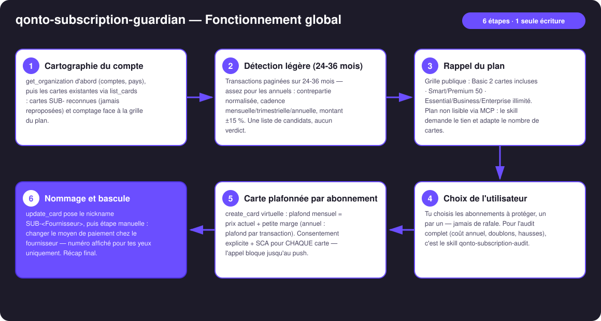
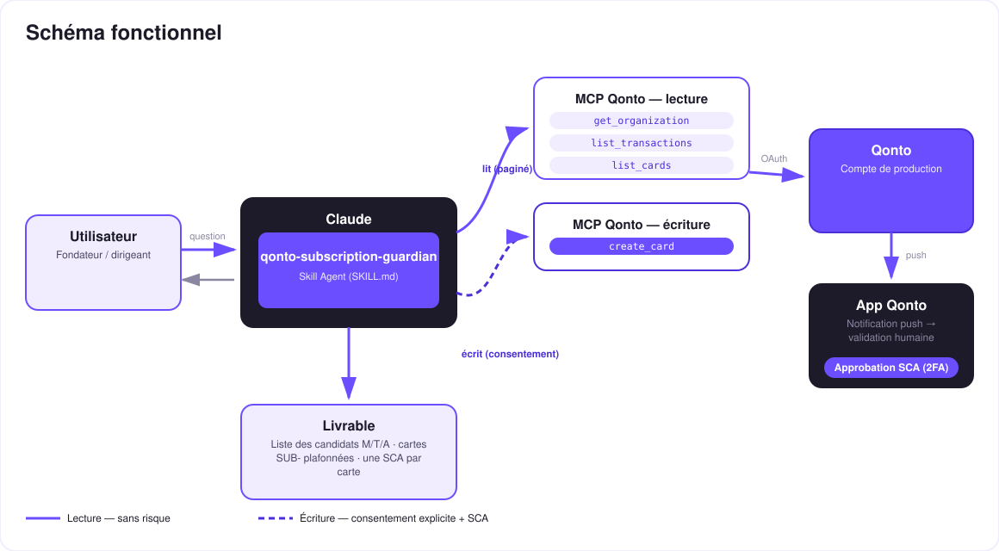

Une carte virtuelle plafonnée par abonnement — détection légère, choix utilisateur, création sous SCA. Un utilitaire d'action, sans plus.
Chaque abonnement prélève ce qu'il veut sur TA carte principale. Ce skill fait une seule chose, et la fait bien : générer des cartes virtuelles plafonnées, une par abonnement — sans plus.
Les prélèvements récurrents sur 24-36 mois — assez large pour attraper les annuels : contrepartie normalisée, cadence M/T/A, montant stable ±15 %. Une liste de candidats, aucun verdict.
Le skill compte tes cartes (list_cards), rappelle la grille de ton plan et propose un nombre de cartes adapté — jamais de rafale.
create_card virtuelle, plafond mensuel = prix + petite marge (annuel : plafond par transaction) — une par une, consentement + SCA à chaque fois.
Nickname SUB-<Fournisseur> via update_card ; les cartes SUB- déjà en place sont reconnues, jamais reproposées.
Positionnement assumé : la protection par carte dédiée est une feature que Qonto proposera sans doute nativement un jour — ce skill te la donne aujourd'hui. Pour l'audit complet des récurrences (coût annuel, doublons, hausses…) : skill qonto-subscription-audit.
| Prérequis | Détail | Obligatoire |
|---|---|---|
| Compte Qonto production | Le skill s'adapte à toute organisation — get_organization d'abord, zéro donnée en dur | ✅ |
| MCP Qonto connecté | Connecteur officiel (claude.ai / Claude Desktop), login OAuth | ✅ |
| Rôle Owner/Admin/Manager | Pour créer la carte directement ; sinon repli sur create_card_request (approuvée par un admin) | ⭕ pour agir — la détection marche pour tous |
| Cartes virtuelles du plan | Basic : 2 incluses (2 €/mois au-delà) · Smart/Premium : 50 incluses (1 €/carte au-delà) · Essential/Business/Enterprise : illimité. Le plan exact n'est pas lisible via MCP (get_subscription → 403) : le skill compte les cartes, rappelle cette grille et te demande ton plan | ℹ️ vérifié avant toute proposition |
| Historique ≥ 24 mois recommandé | Pour attraper les abonnements annuels ; en dessous, les annuels peuvent passer sous le radar — annoncé honnêtement | ⭕ |

ADOBE *CC PARIS, GOOGLE*CLOUD IE) : normalisés avant rapprochement — un fournisseur = une ligneemitted_at — settled_at décale de 1-2 jours et fausse les cadenceslist_cards, proposition dimensionnée au plan annoncé
Le modèle de sécurité, pas une limitation : la lecture est sans risque ; l'écriture exige le consentement explicite dans la conversation ET la SCA — l'appel create_card bloque tant que la notification push n'est pas confirmée sur l'appareil Qonto appairé, et ce pour CHAQUE carte. Selon le rôle, repli sur create_card_request. Ni Claude ni le MCP ne peuvent dépenser un euro.
| Étape | Outil | Note |
|---|---|---|
| Création plafonnée | create_card (virtuelle, plafond = prix + marge) | Consentement explicite + SCA, une carte à la fois |
| Nommage | update_card → SUB-<Fournisseur> | create_card n'a pas de champ nickname |
| Bascule chez le fournisseur | get_card_iframe_url (PAN/CVV) | Étape manuelle — URL éphémère, pour tes yeux uniquement |
| Pause réversible | change_card_status → lock | Prévient d'abord : un prélèvement refusé peut suspendre le service |
| Suppression définitive | change_card_status → discard | Le contrat survit — plafonner ≠ résilier |
| Ajuster le plafond | App Qonto uniquement | Les plafonds ne sont pas éditables via MCP — dit tel quel |
| Sortie | Format | Quand |
|---|---|---|
| Liste des candidats | Tableau markdown : fournisseur · prix · cadence M/T/A · carte payeuse · déjà protégé | Après la détection légère |
| Récap des cartes créées | Tableau markdown : carte · plafond · fournisseur · reste à basculer | En fin de session |
La démo ≤ 3 min jointe à la PR suit le storyboard : problème → liste des candidats (cadences M/T/A) + rappel de la grille du plan → choix utilisateur → LA carte plafonnée créée en live, SCA filmée sur iPhone, carte visible dans l'app avec son plafond → « chaque abonnement a sa boîte » + wrap-up. Tournée en live sur un compte de production réel.
| Idée | Effort | Note |
|---|---|---|
Catégorisation Qonto des abonnements protégés (modify_transaction_cash_flow_category) | Faible | Les lignes SUB- deviennent lisibles dans l'app aussi |
| Benchmark prix public par outil (web search) | Moyen | Pour dimensionner le plafond au juste prix |
| Détection multi-devises (USD/GBP) | Moyen | Normalisation des montants avant le calcul de stabilité |
list_cards + grille 2/50/illimité avant toute proposition — nombre de cartes adapté, jamais de rafalediscard en fin de session ; jamais de PAN complet à l'écran (get_card_iframe_url = pour les yeux de l'utilisateur uniquement)